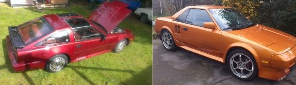

-
Are the front tension rods the same for '87 as they are '88 and 89?
http://www.redz31.net/pages/rods.html
My '87 parts car has what looks like exactly the ones in the pics from that link and I was thinking of grabbing them before I ditch the car.
I'd love to use the '87's control arms, but one of them had been broken completely (shattered actually. No idea how)
Is there any benefit to using the '87s tension rods as opposed to my '86s?1986 300ZX factory Turbo 2+2 5 speed swap. 1985 Toyota MR2. Floor boards gone. Good fabrication practice.
 -
Trnsion rods are the same from 84-late 87 production cars. Currently ASCO only provides "88+" style tension rods. You need the tension rod brackets to change styles. -
What i'm asking is, my parts car has the top rod style, even though it's an early '87, so someone must have swapped it out already.1986 300ZX factory Turbo 2+2 5 speed swap. 1985 Toyota MR2. Floor boards gone. Good fabrication practice.
-
Considering there is a poly bushing, it looks like someone was in there.86na - BlueZ
Shiro #366 - Kouki Monster
85t - Mr Tickles -
Yup someone must of swapped them already.adamvann3;344830 wrote: Considering there is a poly bushing, it looks like someone was in there. -
No, the tension rods were from 87-89 and were on both NA and turbo. The turbo hubs and the twin piston brakes were also on all 87+ cars. The only parts that changed for late 87 were adding the LSD for the rear end and the W series engine with the T25. Supposedly there were some internal changes for the 30A trans as well.
I have a set of 87+ tension rods for sale if anyone is interested. They include the LCAs from my old 86. Already been drilled to fit, and the LCAs have poly bushings already installed.Prius… because Pretentious wouldn't fit across the back of the car…
Cheap, Fast, Reliable - pick any two
My 1986 Turbo Build -
Wait, it has better brakes on the '87 than my '86T? Should I grab them?1986 300ZX factory Turbo 2+2 5 speed swap. 1985 Toyota MR2. Floor boards gone. Good fabrication practice.
-
If it's an 87T it should have the good hubs with slip on rotors and the twin piston calipers. They stop well, pretty much just as well as Z32 brakes, they just aren't as pretty and are heavier than the aluminum ones, so people tend to swap to z32. I'm happy with the ones on my car. I'm planning to run them till I have money together for some Brembos.Tempast;344889 wrote: Wait, it has better brakes on the '87 than my '86T? Should I grab them?Prius… because Pretentious wouldn't fit across the back of the car…
Cheap, Fast, Reliable - pick any two
My 1986 Turbo Build -
i assume youre meaning all 87+turbos have dual piston caliprs & hubs bc neither of my NA dojaqattack02;344858 wrote: No, the tension rods were from 87-89 and were on both NA and turbo. The turbo hubs and the twin piston brakes were also on all 87+ cars. The only parts that changed for late 87 were adding the LSD for the rear end and the W series engine with the T25. Supposedly there were some internal changes for the 30A trans as well.
I have a set of 87+ tension rods for sale if anyone is interested. They include the LCAs from my old 86. Already been drilled to fit, and the LCAs have poly bushings already installed. -
87s still had early tension rods. I've had 7 87s…all were early tension rods, even the 5/87T and 6/87 NA.jaqattack02;344858 wrote: No, the tension rods were from 87-89 and were on both NA and turbo. The turbo hubs and the twin piston brakes were also on all 87+ cars. The only parts that changed for late 87 were adding the LSD for the rear end and the W series engine with the T25. Supposedly there were some internal changes for the 30A trans as well.
I have a set of 87+ tension rods for sale if anyone is interested. They include the LCAs from my old 86. Already been drilled to fit, and the LCAs have poly bushings already installed.
Also, all 87s had T3 turbos, including 4/87+. My 5/87T was a T3, factory, like all 87s…
Also, pre 4/87 turbos had a 24mm front sway bar and 22mm rear sway bar, 4/87+ had 24mm front and rear. All 87Ts have the same 30A trans.
88-89 had new style tension rods, T25, new tune, changed 5th gear ratio in 30A.
Late 87s (4/87+) did add the CONSULT (primitive) though.- VG30DET (HE341) 86 300ZX - 1982 280ZX Turbo - Headered NA 1986 300ZX 2+2 - 2000 Xterra - -
So did the late 87s have a W series with a T3, or was W series only 88-89?michaelp;344934 wrote: 87s still had early tension rods. I've had 7 87s…all were early tension rods, even the 5/87T and 6/87 NA.
Also, all 87s had T3 turbos, including 4/87+. My 5/87T was a T3, factory, like all 87s…
Also, pre 4/87 turbos had a 24mm front sway bar and 22mm rear sway bar, 4/87+ had 24mm front and rear. All 87Ts have the same 30A trans.
88-89 had new style tension rods, T25, new tune, changed 5th gear ratio in 30A.
Late 87s (4/87+) did add the CONSULT (primitive) though.
If they have the early style tension rods, do they have the wider LCAs like the 88+? I thought the suspension and braking changes were all made in 87. I knew about the brakes and sways as those changes are documented on ZBums site, but not the tension rod info.Prius… because Pretentious wouldn't fit across the back of the car…
Cheap, Fast, Reliable - pick any two
My 1986 Turbo Build -
You're correct. 87+ turbo cars. That's why I said "turbo hubs".xanmanz31;344933 wrote: i assume youre meaning all 87+turbos have dual piston caliprs & hubs bc neither of my NA doPrius… because Pretentious wouldn't fit across the back of the car…
Cheap, Fast, Reliable - pick any two
My 1986 Turbo Build -
wanted to make sure bc ive got 2 4/87 N/Ajaqattack02;344937 wrote: You're correct. 87+ turbo cars. That's why I said "turbo hubs". -
All 4/87 on, NA and Turbo cars, had W series motors
1988 300ZX Turbo, Shiro Special #760
1988 300ZX Turbo Automatic (wife's car)
1991 Hard-body 2WD
http://zccw.org/zccw/?page_id=1215 -
Correct, and 4/87+ 87 models had W-series with a T3 for turbo cars.reddzx;345166 wrote: All 4/87 on, NA and Turbo cars, had W series motors- VG30DET (HE341) 86 300ZX - 1982 280ZX Turbo - Headered NA 1986 300ZX 2+2 - 2000 Xterra -

Copyright © 2006–. All rights reserved. Privacy Policy